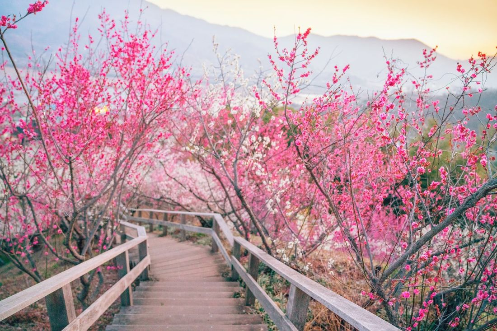
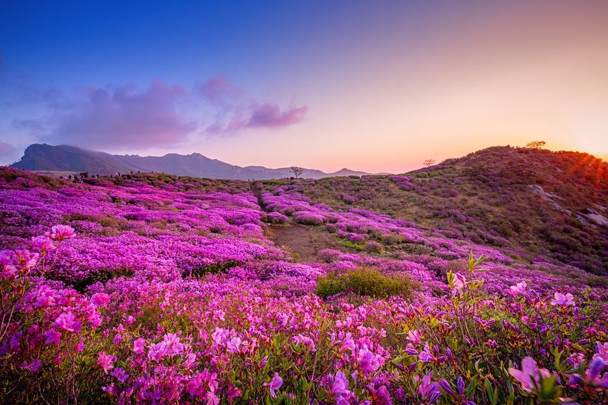

평년 개화·단풍 시기와 월별 촬영 적기를 빠르게 확인합니다.
엘란비탈 박성욱 · 스마트미디어아트센터
사진가를 위한 무료 자료
이번 달,
봄 · 매화 초여름 · 철쭉 가을 · 단풍
이번 달,
어디로 찍으러 갈까?
개화·단풍·은하수·야경·축제까지, 계절에 맞는 전국 출사지와 현장 촬영 팁을 월별로 정리했습니다.
12개월 출사 시기전국 10개 권역카메라·스마트폰 팁


서울·경기와 전국 추천지를 구분하고 지도 검색으로 바로 연결합니다.
현장 촬영 설정과 스마트폰 촬영 팁을 함께 확인합니다.
엘란비탈 박성욱 작가 · 스마트미디어아트센터